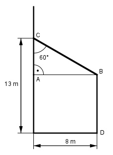

Aufgabe 102 Die Stirnwand eines Anbaus soll eine 1,5 cm dicke Putzschicht erhalten. Der Putz ist aus Kalk und Sand im Verhältnis 1 : 4. gemischt Wie viel m³ Kalk und Sand benötigt man?  Im Dreieck ABC gilt: AB tan 60° = ---- |*AC AC AC * tan 60° = AB | :sin 60° AB 8 m AC = --------- = --------- = 4,62 m tan 60° 1,732 BD = 13 m - AC = 13 m - 4,62 m = 8,38 m VPutz = G * d Grundfläche G ist ein Trapez: 13m + 8,38 m G = -------------- * 8 m = 85,52 m² 2 d = 1,5 cm = 0,015 m VPutz = 85,52 m² * 0,015 m = 1,2828 m³ Es sind insgesamt 1 Teil + 4 Teile = 5 Teile 5 T entsprechen 1,2828 m³ 1,2828 m³ 1 T entspricht ------------ = 0,257 m³ Kalk 5 4 T entsprechen 1,2828 m³ - 0,257 m³ = 1,026 m³ Sand